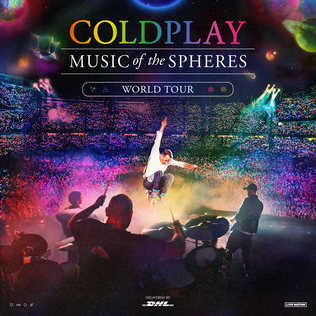

Spotify Worldwide Trends: Music of the Spheres World Tour Edition
March 16, 2026

Spotify Charts, launched in 2017, reflect the music consumption trends
worldwide on the platform. Every day, the top 200 most streamed songs worldwide are published,
along with the top 200 streamed songs in 72 select regions.
The Music of the Spheres World tour is the
most attended concert tour of all time, selling over 13 million tickets
across 223 shows, while also additionally stopping at the Rock and Rio Festival in Brazil,
and Glastonbury Festival in the United Kingdom, and is expected to continue in 2027.
Mapping the Tour
The tour took place through 80 different cities across 41 different regions.
Play or scroll through a chronological timeline of the tour. Hover over points on the chart to see data.
The charts to the right show the songs by Coldplay on the Daily Top Songs chart for
the region, ranging from one week before to one week after the tour date.
For example, the San Jose, Costa Rica stop shows the Daily Top Songs Costa Rica chart.
Revenue and attendance numbers are totalled for all consecutive stops of one city.
The stops on 9/10/22 and 6/29/24 stops were festival stops, so no attendance/revenue is reported
In particular, the tour stops in smaller regions tend to have the most impact on the charts for the region,
in terms of quantity of songs charting, as since the population is smaller in these regions, a large event in a
smaller region brings a higher proportion of the population together, allowing for more chart impact.
It is also interesting to note the differences in the top songs based on the region. For example, the Rome, Italy
stop has Viva La Vida as the top song with a chart placement difference compared to the next top song, Yellow. However,
throughout the stops in Bocaue, Phillipines, Yellow emerges as the top song, eventually doubling the streams of the second
highest song in the region, Viva La Vida. As Coldplay experiments with different sounds throughout their career,
different regions may prefer different types of songs.
Mapping Individual Songs
Now, use the regional maps below to gain insight into the patterns of what regions stream certain songs the most.
Pause the animation as desired, and hover over regions to see the exact streams for the song in the given region.
The songs available are all songs that charted in the top 200 of a region on some day, sorted by most popular songs on top.
Regions where spotify is not available in are colored dark gray, representing that it is impossible to chart in that region.
Regions where spotify is available but the song is not in the top 200 songs for that day are colored light gray, representing
the limitations of Spotify's Daily Charts, if the song is not in the top 200, we do not know the regional streams of the song.
Stream Map
Song:
Playback Speed:
Placement Map
Songs streams tell us the story of which countries contribute the most to a song's overall streaming numbers, but
does not tell us the relative strength of the song within the country. Streams naturally will be significantly higher in the
USA compared to smaller countries in population such as Norway. Mapping the songs by placement allows us to see relative success
of the songs, seeing which regions the song was succesful in the most relative to other songs in the region. For example, a song having a rank of 6 in Norway means that
the song was the 6th most popular song in Norway on the day.
Song:
Playback Speed:
Some interesting insights from the maps above are observing the impact of viral performances at the concert.
The performances at the concert get shared on social media platforms such as Instagram or TikTok. While the performances of
all their most popular songs get shared, the impact is most notable for songs that were not major hits before the tour. 'Sparks'
was a deep cut from their debut album, released in 2000. However, the song started to see minor viral hype starting in late 2022,
resulting in the song being added to the setlist of the tour, allowing for the song to slowly gain and enter new countries charts
over time. It exploded in popularity in June 2025 after a performance of Chris Martin singing the song with extra heartfelt emotion blew up.
Which countries chart the most songs on their charts? Instead of mapping singular songs, now we map
by count to see overall relative success of Coldplay's discography per region. The count is simply the number of songs
in the top 200 of the Daily Top Songs for the region.
Playback Speed:
A particular fascinating case to see here is the impact of the tour on the numbers through many different events.
The viral 'Sparks' moment around June 2025, along with the infamous 'Coldplay CEO' on the Jumbotron in July 2025 boosted the song charting numbers
especially in the United States, charting over 5 songs at once for the first time. Even after the 2025 USA leg of
the tour finished in July, they were able to consistently chart 3-4 songs throughout August as a result of the
aftermath of the virality of the event.
Global Streaming Patterns
While the previous visualizations focused more on regional success of the discography, viewing worldwide
performance is also interesting in seeing trends for the songs. Below, we can visualize the total global
performance of the song on the Top Global Daily Songs chart.
The graph below can be zoomed in by scrolling and panned by clicking and moving the mouse.
Change the display of the graph to switch from viewing streams to chart placement
Hover over a point on the graph to view streaming distribution by region of the given song on the given day.
Display:
The global distribution graph allows us to see patterns in worldwide performance, before, during, and after the tour's impact.
Some interesting patterns to note is the patterns of songs. Songs that they released recently have more regular chart performance,
more similar to popular current hits. This is most seen by highlighting over the runs for 'Something Just Like This', released in
2017, and 'My Universe', a collaboration with BTS released in 2021, where the songs started higher and slowly fall over time, like
a more typical popular hit. 'Christmas Lights' performs like a holiday hit does, rises sharply in December and falls
as the holiday season comes to an end. Their older songs meanwhile needed time to build up popularity as the tour started bringing them back
to the charts.
The donut graph allows one to see distribution of a song's streams across available spotify regions.
For example, the song 'Sparks' tends to perform relatively better in the US, with around 25% of it's streams coming from the
US daily, while 'My Universe' has a huge range of countries with less US emphasis, especially helped by the BTS feature. Songs
like A Sky Full of Stars, an electronic dance music song, is seen as most popular outside the US. In the distribution, it is
often seen under "other" streams as unfortunately spotify only provides data for the top 200 streamed songs per region individually.